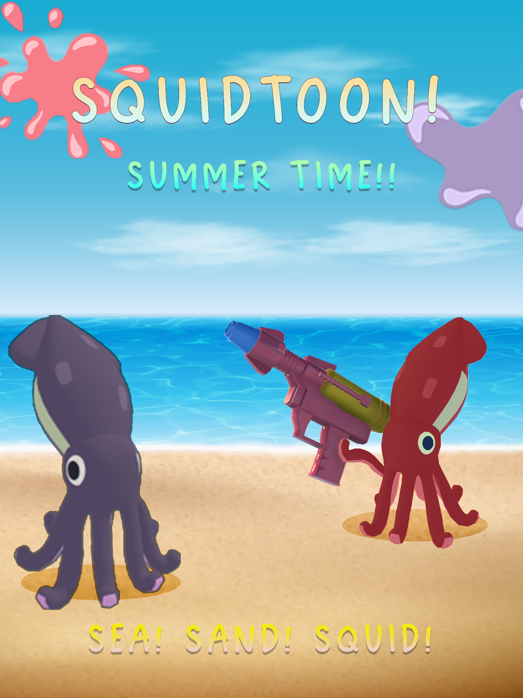
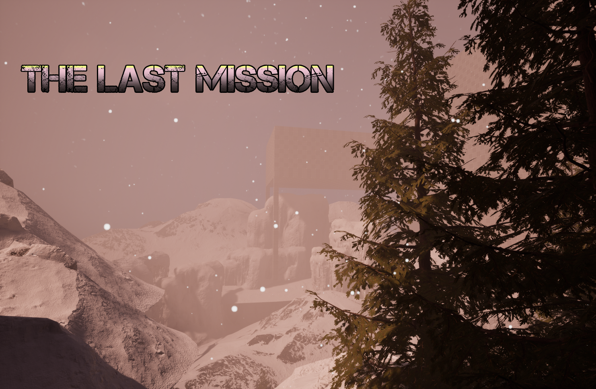
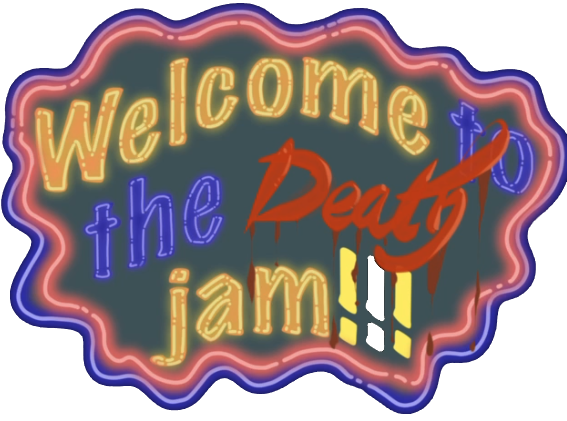
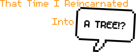
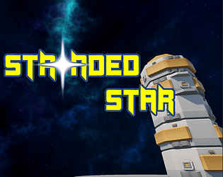

Squidtoon
A multiplayer shooter / arcade game inspired by Splatoon and Fall Guys. Players play through a sequence of eliminations including races, obstacle courses, free-for-all and team deathmatches.
Play on itch.io

A multiplayer shooter / arcade game inspired by Splatoon and Fall Guys. Players play through a sequence of eliminations including races, obstacle courses, free-for-all and team deathmatches.
Play on itch.io
A narrative-driven first person shooter level made as part of my Advanced Mission Design coursework. I was responsible for writing the story for all 3 levels of the campaign.
Watch Playthrough
A jam entry where the player joins a game jam that turns out to be a death game where only the team that made the best game survives. Resource management & survival gameplay inspired by 60 Seconds.
Play on itch.io
A jam entry game where you turn into a tree and have to survive waves of lumberjacks and knights and grow by shooting apples at them, and choose whether you want to be evil.
Play on itch.io
A turn based strategy / survival game where you are stranded on an alien planet and must survive and build a spaceship to escape by commanding robot units.
Play on itch.io